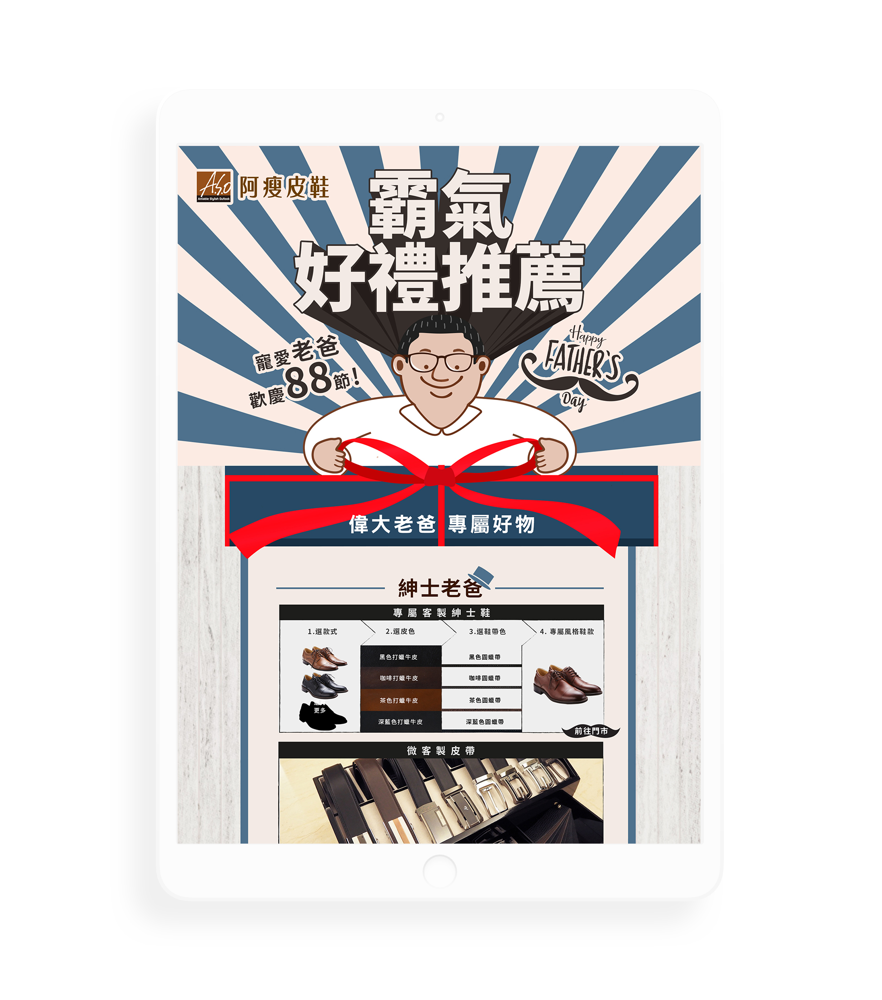

Duration: July 2018
Tool: Photoshop, Illustrator, After Effects
Role: Graphic design, Motion design
Over the past few years, A.S.O, a family shoes business started in 1952, focused so much on executing short-term methods that bring instant benefits, such as eye-catching color and discount. However, emotion drives our purchasing behavior. Brand must build relationship with customers and client so that they become the loyal customers. Relationship marketing is needed to create an emotional connection with the consumer.
To create an emotional connection with the customers and consumers, I designed a hardworking dad character with white hair, dad bod as well as worn out shoes and bag. After seeing the character, the customers would somehow reflected on their father and considered buying a decent gift that A.S.O always provided to customers to their father on Father's Day.
My 3D dad was a augmented reality marketing on social media that people could win a gift for their father. It increased engagement and followers and also helped with sales and the growth of the business. In this campaign, people could project coloring characters in the card in 3D and change the shoes of the character.
To develope a steady relationship with clients who had bought the shoes, to increase sales and to notify them of new offers and products regularly, we sent EDMs to communicate constantly to customers.
